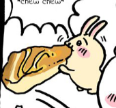

Usagi is one of three main characters in the Chiikawa manga and anime series. In the Chiikawa,
This anime is about 3 cute creatures and their daily life from different angles. its meant to be a light hearted show/read.
for example, this snippet shows just how unserious
this series. its literally them eating a giant pancake with no explaination. there are other notable chapter with in this series.
Usagi in japanese is meant to be rabbit. As such we can see the traits of a rabbit in his character design. Looking at him you can see how
is a golden colored rabbit. Along with this he has a very cheeky personality from being sporatic to being the a bundle of energy, embodying the traits of a rabbit.
Alike he is also very cute, very rabbit like :D. alike he very gluttious, almost mochi like being.
please reference fandom to learn more about Usagi and the lore in Chiikawa.
| Personality | Description |
|---|---|
| Loyality | At first the show protray Usagi as a interuptive character, that sportatically shows up. While Usagi, might look selfish at first when reading Chiikawa, he is one of the most protective/loyal friend you can ask for. As he would protect his friends from any threat that are 10x his size. |
| Gluttony | With in the show he literally eats everything. He can finish a giant pancake, to a giant pudding in one sitting and still be fine.
He's simply the world champion @ eating!  |
| Energetic & Hyper | Throughout the series we can see Usagi dance in many different forms. From taunting people by him shaking his booty,
to him dancing in joy of food. Even him joining his friends in a dance. He is one of the best dancer in my PERSONAL opinion. |